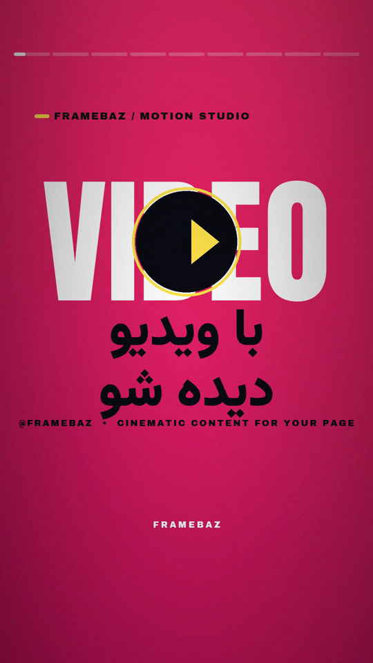

1
HOOK
0:00.0 → 0:05.1 · 5.1sبا ویدیو / دیده شو
EN SUB — Photos not growing your page? Try video.
🎙 اگه پیجت با عکس دیده نمیشه، وقتشه ویدیو رو امتحان کنی.
کلمهٔ «VIDEO» بزرگ پشت صحنه + دکمهٔ پلی با انیمیشن الاستیک و حلقهٔ زرد ضرباندار؛ تیتر فارسی با فرود پاپ (out-back) وارد میشود. punch-in دوربین در ابتدای صحنه.